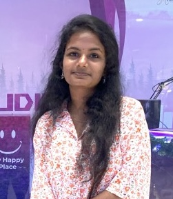
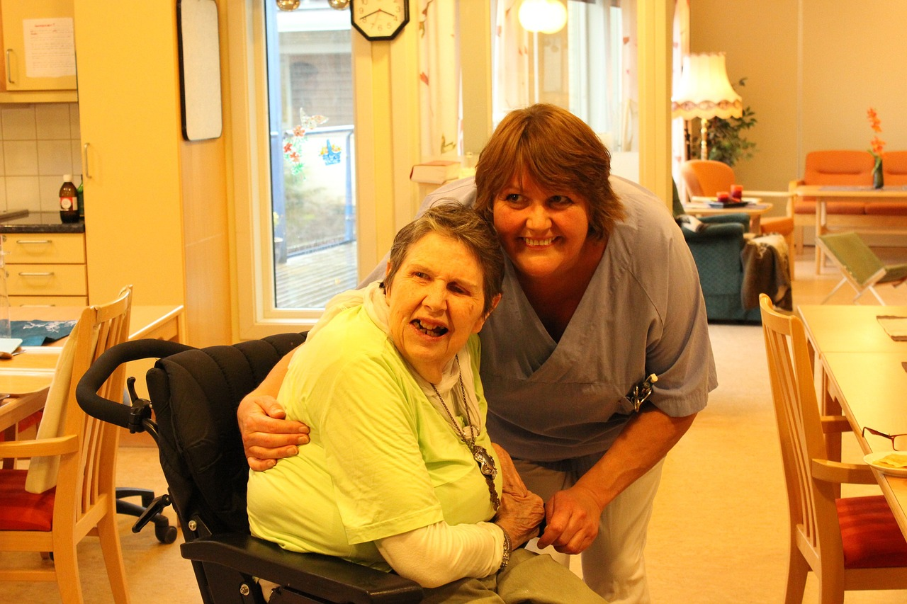
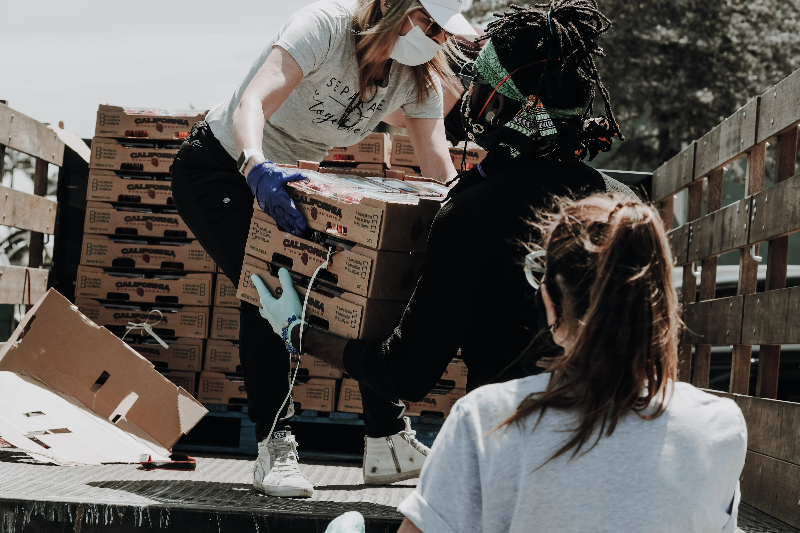
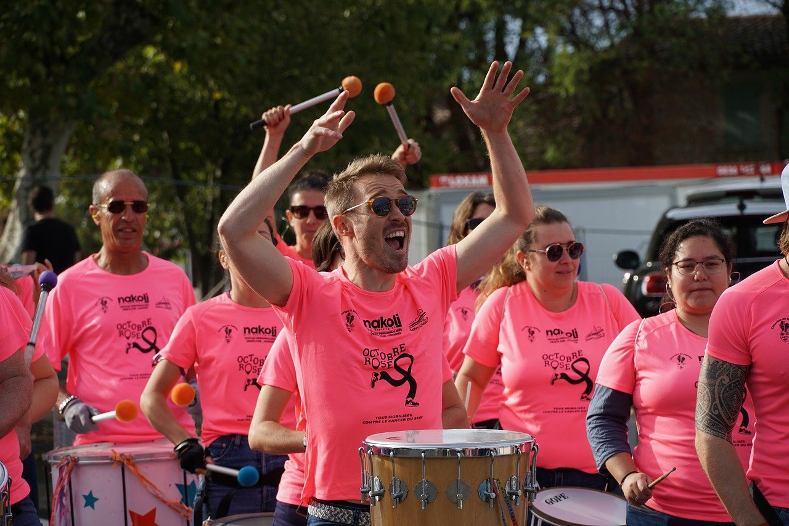

The Environmental Club of IIT organized
a successful EnvironmentalAwareness Drive,
bringing together students and faculty members to
promote sustainability and
environmental consciousness within the campus
and the surrounding community.
ABOUT US
We, the young and passionate IIT undergraduates,
have taken the initiative to transform Sri
Lanka
into a better place for future generations.

Nishanjali Kamalendran
Archanaa Ramesh

Shriaahithyaa Ganeshsarma
Akaash Sasiraj
Ariyadas Bathushan
GALLERY
The successful events we took initative of



2008
2009
The event featured a tree planting ceremony where
volunteers planted saplings around the campus
to enhance greenery and promote biodiversity.
volunteers planted saplings around the campus
to enhance greenery and promote biodiversity.
2010
Interactive workshops were held to educate
participants on topics such as wastemanagement,
recycling, and sustainable living practices.
Experts from the field were invited to
share their knowledge and experiences.
participants on topics such as wastemanagement,
recycling, and sustainable living practices.
Experts from the field were invited to
share their knowledge and experiences.
2011
An IIT-organized environmental conservation event aimed
to clean up local water bodies,
involving students and
volunteers in removing
waste, raising awareness about pollution's
impact, and fostering community engagement for
sustainable environmental practices.
to clean up local water bodies,
involving students and
volunteers in removing
waste, raising awareness about pollution's
impact, and fostering community engagement for
sustainable environmental practices.
2012
A cultural exchange event organized
by IIT facilitated interaction
between students and local communities,
featuring performances, workshops on traditional arts,
and discussions to promote
cross-cultural understanding and appreciation..
by IIT facilitated interaction
between students and local communities,
featuring performances, workshops on traditional arts,
and discussions to promote
cross-cultural understanding and appreciation..
2013
IIT organizes healthcare volunteer events
to provide medical services and health education, focusing on
underserved communities through check-ups, vaccinations,
and workshops, collaborating with
local providers and NGOs for sustainable impact.
to provide medical services and health education, focusing on
underserved communities through check-ups, vaccinations,
and workshops, collaborating with
local providers and NGOs for sustainable impact.
2014
The event concluded with a rally through nearby residential areas,
where participants distributed
pamphlets and engaged with
local residents to spread awareness about environmental issues
and the importance of community involvement in sustainability efforts.
where participants distributed
pamphlets and engaged with
local residents to spread awareness about environmental issues
and the importance of community involvement in sustainability efforts.
2015
A creative station was set up where volunteers could
make eco-friendly crafts from recycled materials.
This activity aimed to demonstrate the importance
of reusing and repurposing items.
make eco-friendly crafts from recycled materials.
This activity aimed to demonstrate the importance
of reusing and repurposing items.